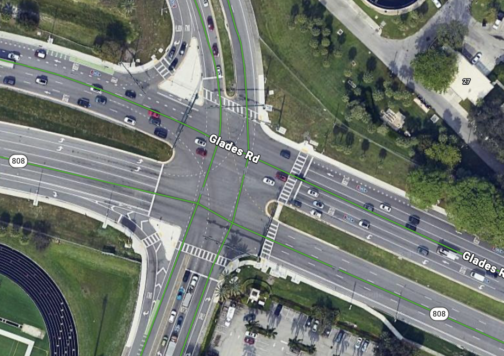
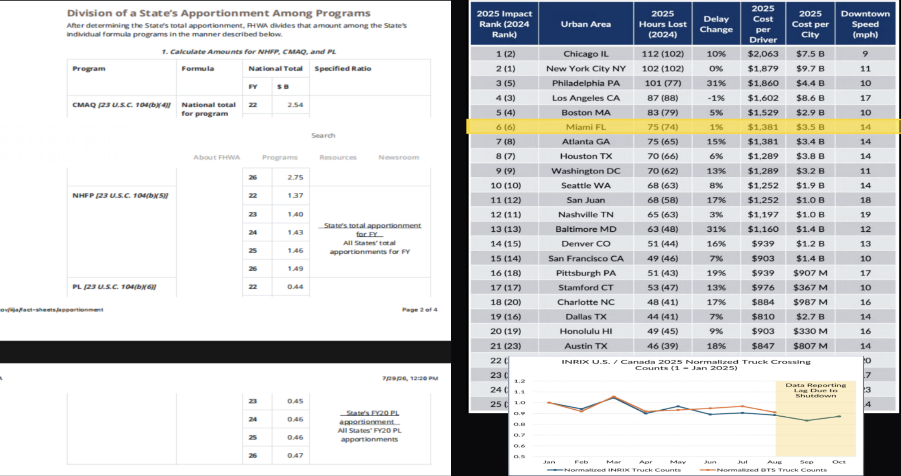
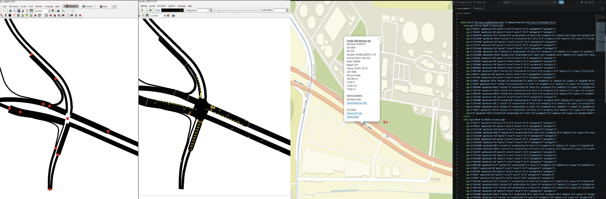
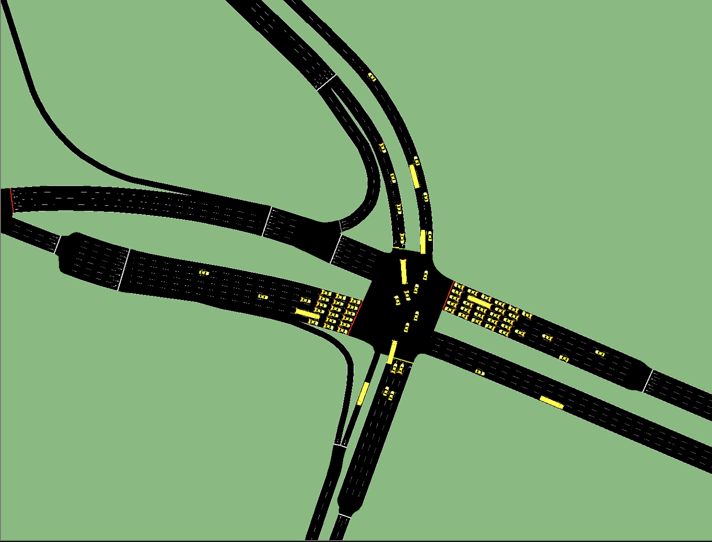
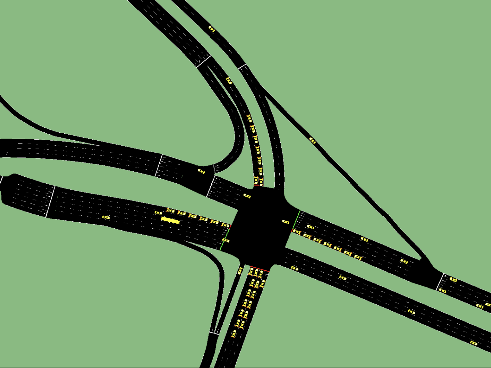

How can we predict the impact of future infrastructure changes before implementing them in the real world?

In the summer of 2026, I flew to Florida Atlantic University and joined I-SENSE, an R1 research program, to study digital twins for smart urban traffic systems. Little did I know it would become one of the most rewarding experiences of my life. Under the mentorship of Dr. JinWoo Jang, the purpose of this research was to experiment with and learn how digital twins can predict the impact of future infrastructure changes before they are implemented in the real world. I chose the Glades Road and Airport Road intersection in Boca Raton, next to the FAU campus, as the case study for building my first digital twin

Every year, the Federal Highway Administration channels billions of dollars through the Infrastructure Investment and Jobs Act into critical infrastructure—roads, bridges, and safety enhancements designed to mitigate congestion. Yet, the gridlock persists. In major hubs like New York, Chicago, and Miami, drivers lose an average of 49 hours every single year to traffic, translating to over $40 billion burned in lost productivity. The fundamental flaw isn't a lack of capital; it's a deficit of visibility. Billions in infrastructure decisions are routinely made using stale, months-old historical data and low-fidelity annual reports gathered from flat, traditional roadside cameras. If we want to ensure public funds are spent wisely, we have to transition from reactive observation to predictive architecture. By fusing real-time dynamic traffic streams with static infrastructure data to build high-fidelity digital twins, we can accurately model the friction of our cities testing the exact impact of infrastructure changes before a single dollar of concrete is poured.
In this case study, we explore how digital twins can be leveraged to predict the impact of future infrastructure changes before implementing them in the real world. We focus on a specific intersection in Boca Raton, Florida, and demonstrate how our approach can lead to more informed decision-making and better outcomes for urban traffic systems.

To build our digital twin, the first step starts right inside the SUMO ecosystem using OSM Web Wizard. You open up the tool, select the exact geographic area you want to study, and it imports the real-world map data. From there, you export that network straight into Netedit, which gives you a full suite of editing tools to clean up lanes, adjust traffic lights, and fine-tune the layout. Once the network is dialed in, you load it into SUMO and run the simulation. As the simulation finishes running, it dumps a massive amount of raw operational data into XML files. Looking at those raw files can be pretty overwhelming and dizzying—which is exactly why we write custom Python code to read through the files, strip away the noise, and instantly extract the exact vehicle counts and data we need.

This is our calibrated digital twin model

On the westbound approach of Glades Road there are four lanes: one turning north toward the airport, two continuing straight, and one turning south. The edited network explores a simple idea, by diverting the vehicles that would otherwise turn left, we can reduce the number of cars held up on the main road and ease congestion through the intersection. 16% deacrease in congestion. Deacrease of 380 vehicles per hour